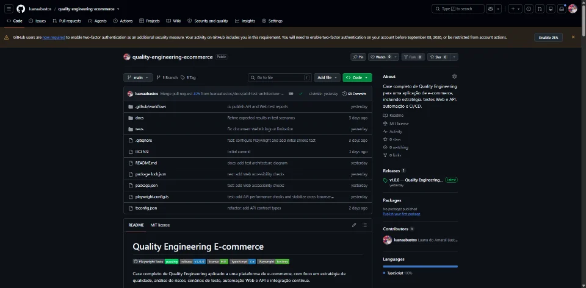
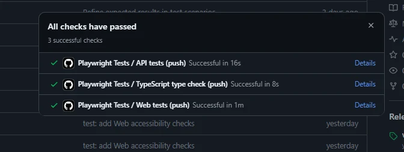
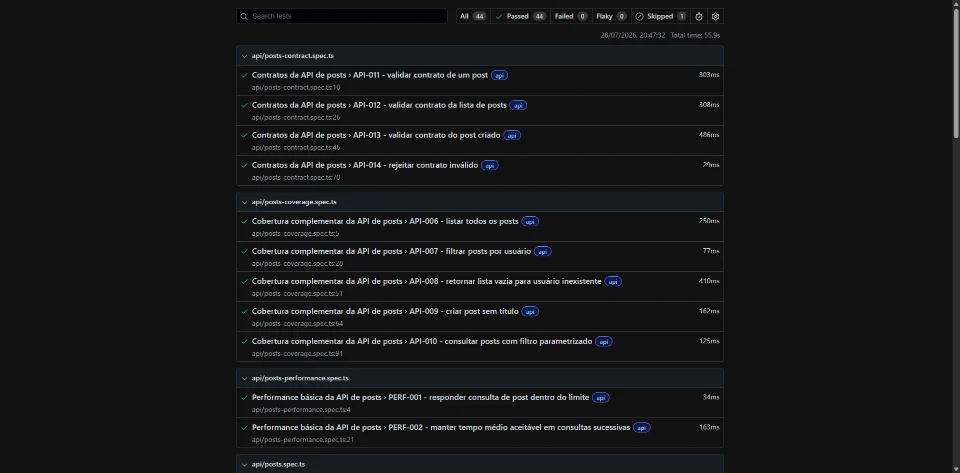

Risco orienta prioridade
Criticidade, impacto para o negócio, probabilidade de falha e histórico do produto definem a ordem e a profundidade dos testes.
Quality Engineering • Test Strategy • Automation • Technical Leadership
Atuo em Quality Engineering de ponta a ponta, combinando análise de riscos, estratégia de testes e automação em produtos Web, Mobile e APIs. Colaboro com Produto e Engenharia desde o refinamento e exerço liderança técnica para orientar decisões de qualidade e prevenir defeitos.
Sobre mim
Trato qualidade como uma decisão de engenharia construída ao longo do ciclo, não como uma etapa final de validação. Meu trabalho começa na análise de requisitos, regras de negócio, critérios de aceitação e riscos que orientam a prioridade e a profundidade dos testes.
Combino testes funcionais, regressivos e exploratórios com automação Web, Mobile e de APIs conforme o contexto do produto. As evidências produzidas apoiam a investigação de falhas, a comunicação de riscos e a evolução contínua da estratégia de qualidade.
Minha experiência anterior em desenvolvimento de software fortalece a análise técnica das soluções e a investigação de problemas. Essa base amplia o diálogo com Produto e Engenharia e contribui para prevenir defeitos antes que cheguem às etapas finais da entrega.
Princípios de atuação
A estratégia parte do contexto do produto: riscos, regras de negócio, arquitetura, estágio da entrega e evidências disponíveis orientam onde concentrar o esforço de qualidade.
Criticidade, impacto para o negócio, probabilidade de falha e histórico do produto definem a ordem e a profundidade dos testes.
Requisitos, regras de negócio, critérios de aceitação e dependências são analisados no refinamento para tornar riscos e ambiguidades visíveis antes da implementação.
Organização de prioridades, revisão de automações, mentoria e comunicação técnica mantêm Produto, Engenharia e QA alinhados sobre riscos e critérios de qualidade.
Especialidades
Planejamento orientado a riscos, definição de critérios de aceitação e uso de testes funcionais, regressivos e exploratórios conforme a criticidade do produto.
Criação, manutenção e revisão de testes automatizados para fluxos críticos, com atenção à legibilidade, estabilidade e evolução da suíte.
Validação funcional de APIs, contratos e dados, cobrindo cenários positivos, negativos e regras de negócio nas integrações.
Testes em diferentes dispositivos e ambientes, integração de automações ao CI/CD e acompanhamento de evidências para tornar regressões visíveis durante a entrega.
Experiência
Minha trajetória conecta fundamentos de QA, experiência prática em desenvolvimento back-end e especialização progressiva em estratégia, automação e liderança técnica de qualidade.
Geopixel
Liderança técnica e Quality Engineering
Liderança técnica das atividades de QA e organização das demandas do time, em colaboração com Produto e Desenvolvimento durante o ciclo de entrega.
Geopixel
Automação, estratégia e colaboração
Acompanhamento da qualidade desde o refinamento dos requisitos até a validação final, apoiando também a organização das atividades e das entregas de QA.
Geopixel
Especialização em Quality Assurance
Entrada na Geopixel com atuação na estruturação de processos e práticas de qualidade ao longo das diferentes etapas de entrega.
MOVA | Credit as a Service
Engenharia de software e visão de arquitetura
Experiência em desenvolvimento que consolidou a leitura de código, APIs, arquitetura, debugging e banco de dados aplicada hoje à investigação de qualidade.
MOVA | Credit as a Service
Construção de uma visão multidisciplinar
Atuação introdutória em desenvolvimento Web, reunindo atividades de back-end, front-end, SQL e QA que formaram a base técnica para compreender o produto além da interface.
Global Financeiro
Fundamentos da trajetória formal em QA
Início da atuação formal em qualidade de software em uma plataforma de gestão e auditoria financeira.
Engineering Cases
Projetos usados como evidência de Test Strategy, automação e engenharia de qualidade. O e-commerce é o case publicado e demonstrável; os demais permanecem identificados conforme o estado atual de desenvolvimento.
Case autoral aplicado a um cenário de e-commerce, estruturando estratégia baseada em riscos e automação de testes Web e API com Playwright e TypeScript.
Aplicação prática de Quality Engineering a fluxos de cadastro, autenticação, catálogo, carrinho, checkout e sessão. O projeto é um case de portfólio, não uma entrega para cliente.
Cobrir riscos financeiros, operacionais e de segurança sem tratar todos os cenários como equivalentes, mantendo rastreabilidade entre riscos, prioridades e testes.
Priorização P0, P1 e P2. Os testes Web exercitam jornadas críticas pela interface; os de API cobrem regras, respostas e contratos no serviço. A estratégia inclui acessibilidade e execução em Chromium, Firefox e WebKit.
Projetos Playwright separados para Web e API, Page Object Model, fixtures e payloads reutilizáveis, APIRequestContext, contratos Zod e verificações com Axe Core.
GitHub Actions em pushes e pull requests, com jobs independentes para TypeScript type check, testes de API e testes Web e artifacts separados para os relatórios.
Estratégia, riscos e cenários permanecem documentados junto ao código e podem ser consultados no repositório público.
Sinais da release v1.0.0
Evidências de execução

Comprova a versão publicada em 27/07/2026 e o acesso à documentação e ao código do projeto.
Abrir release
Comprova os três jobs independentes de type check, API e Web executados no GitHub Actions.
Abrir workflow
Comprova o estado da execução registrada: 44 aprovações, nenhuma falha e uma execução ignorada.
Abrir evidênciaRoadmap técnico
Projetos apresentados somente com o objetivo que pode ser sustentado hoje; capacidades e evidências serão associadas após validação.
Projeto em evolução voltado à aplicação de práticas de Quality Engineering e à organização do processo de qualidade.
Capacidades e evidências ainda não validadas para publicação.Projeto em desenvolvimento para aplicar fundamentos de Software Testing em uma experiência estruturada de estudo e avaliação.
Capacidades e evidências ainda não validadas para publicação.Capacidades e stack
Cada grupo diferencia o que foi aplicado na experiência profissional, demonstrado em projeto autoral, desenvolvido em formação ou ainda precisa de confirmação de contexto.
Planejamento e acompanhamento da qualidade ao longo do ciclo, com profundidade definida por requisitos, riscos e critérios de aceitação.
Experiência profissional
Automação aplicada a fluxos críticos, com manutenção da suíte, legibilidade e revisão técnica dos testes.
Experiência profissional
Engineering Case
Demonstrado no case Quality Engineering E-commerceFormação ou estudo
Contexto prático ainda não confirmado.
Validações de serviços, contratos e dados apoiadas pela experiência anterior com APIs, microsserviços e banco de dados.
Experiência profissional em QA
Engineering Case
Background profissional em Engenharia de Software
Formação ou estudo
Planejamento e acompanhamento de testes mobile e evolução da estratégia de automação no contexto profissional.
Experiência profissional
Progressão profissional em automação mobile
A trajetória começou com Katalon, cujos recursos assistidos apoiaram a construção inicial dos scripts. Em um projeto desenvolvido em Flutter, o Maestro foi utilizado para automação mobile. Atualmente, o Appium é utilizado em automação mobile, adotado com a evolução da experiência para uma abordagem mais robusta de automação.
Qualidade integrada ao fluxo de engenharia, com distinção entre ferramentas de QA e o background anterior em desenvolvimento.
Engineering Case
Experiência profissional em QA
Usado no processo de qualidade e também no fluxo anterior de desenvolvimento.
Background profissional em Engenharia de Software
Práticas que conectam a execução técnica à comunicação de riscos, à organização do trabalho e à evolução do time de QA.
Experiência profissional em QA
O uso confirmado de Azure DevOps refere-se à plataforma em contexto de equipe, sem atribuição a pipelines ou CI/CD.
Background profissional em Engenharia de Software
Formação
Universidade Federal de Itajubá — UNIFEI
2018 — 2023UniCesumar
2026 — 2029Cursos e certificações em Cypress, Selenium, APIs, Postman, Playwright, desenvolvimento e metodologias ágeis.
Ver certificações no LinkedIn